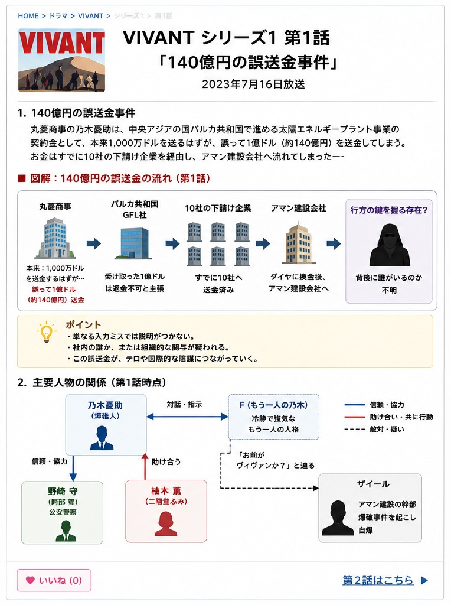

VIVANT 第1話｜140億円の誤送金から始まる逃亡劇
あらすじ・人物関係・伏線を整理
商社の誤送金事件から始まり、バルカ共和国での爆破事件、公安・野崎守との出会い、そして「VIVANT」という謎へ。第1話の流れを時系列で整理します。

1. 140億円の誤送金事件
主人公は、丸菱商事エネルギー開発事業部・第2課課長の乃木憂助（堺雅人）。中央アジアの架空の国「バルカ共和国」で進める太陽エネルギープラント事業で、現地インフラ企業GFL社へ契約金を送金します。
1,000万ドル
1億ドル
差額は9,000万ドル。日本円で約140億円という大事件になり、社内では乃木の責任と見られ、懲戒解雇寸前まで追い込まれます。
エネルギー事業部長の宇佐美哲也は「どんな手を使ってもいい。1ヵ月以内に差額の9千万ドルを取り戻せ」と命じ、乃木は自らバルカ共和国へ向かいます。
一方、丸菱商事のシステム管理部による調査では、システムエラーは確認されず、人為的に10倍の金額が送金された可能性が示されます。さらに監視カメラ映像から、経理部へ送金申請が届いた時刻に送金元のパソコンを操作していたのが乃木だったことも判明します。

2. GFL社との交渉
乃木がGFL社社長アリに返金を求めると、「もう下請け企業へ送金済みだから返せない」と拒まれます。1億ドルは、すでに10社の下請け企業の口座へ振り込まれていました。
3. 乃木の「もう一人」F
ホテルへ戻った乃木は、突然、自分自身と会話を始めます。もう一人の乃木、通称「F」は、普段の乃木とは対照的に冷静で強気、そして行動力があります。
- 多重人格なのか
- 妄想なのか
- 特殊な訓練によるものなのか
第1話の時点では説明されず、このFの存在が作品全体の大きな謎として残ります。
4. CIAの友人サムとアディエルとの出会い
乃木は、アメリカCIA勤務の友人サムへ送金先の調査を依頼。1億ドルはダイヤモンドに換えられたうえで、「アマン建設会社」という企業へ流れていたことが分かります。
乃木はタクシーでアマン建設のあるセドルを目指しますが、砂漠で運転手にだまされ置き去りにされます。砂丘を歩き続けた末に力尽きた乃木を救ったのが、ラクダで通りかかったアディエルと娘ジャミーンでした。
アディエルは2年前の事故で妻を亡くし、ジャミーンと二人暮らし。ジャミーンはその事故を目撃したショックから言葉を話せなくなっていました。
5. ザイールの自爆と爆破事件
翌日、乃木はアディエル親子とともにセドルへ向かい、返金を求めてアマン建設のザイールのもとを訪れます。
ザイールは突然拳銃を取り出して警察官を射殺。さらに乃木へ近づき、こう問いかけます。
直後、ザイールは体に巻いた爆薬を起爆して自爆。市街地セドルで大爆発が起き、乃木も巻き込まれます。
ところが現地警察は乃木を爆破犯と誤認。物語は、誤送金を追う商社マンの話から、爆破テロ・殺人容疑・逃亡劇へ一気に変わります。
6. 公安・野崎守との出会い
乃木を助けたのは、アマン建設に潜伏していた日本の公安警察野崎守でした。爆発に巻き込まれ負傷した乃木は病院へ搬送されます。
その後、乃木・野崎・現地の日本人医師・柚木薫はチンギス率いるバルカ警察に拘束されます。しかし、警察のバンを運転していたのは野崎の仲間ドラム。3人はそのまま逃走に成功します。
野崎はある組織を追ってバルカへ来ており、乃木についても「ただの商社マンではないのではないか」と疑い始めます。
7. 柚木薫との出会い
病院で乃木が出会うのが医師の柚木薫（二階堂ふみ）です。爆破で負傷した人々を助ける姿が描かれ、薫もその後の逃亡に巻き込まれていきます。
爆発に巻き込まれたアディエルは病院で死亡。ジャミーンを薫に託します。地元警察側にも多数の犠牲者が出ており、事件はさらに重大なものとなります。
8. チンギスに追われ、砂漠を横断
一行は日本大使館のある首都クーダンを目指しますが、警察の銃撃で車両の燃料タンクが損傷。小さな村へ立ち寄ります。
野崎が事前に懐柔していた有力者の手引きでモスクへ身を隠すものの、住民の密告で居場所が発覚。チンギス率いる警察が迫ります。
乃木たちは警察犬の嗅覚を狂わせるため、汲み取り式便所の肥溜めに身を隠し、追跡を攪乱。その隙にドラムが警察車両を爆破し、一行は脱出します。
その後は馬で逃走し、遊牧民に紛れながらクーダンへ。山羊の群れを利用して警察の追跡を止め、街中を馬で日本大使館へ向かいます。
9. 日本大使館へ中央突破
日本大使館周辺には厳重なバリケードが築かれています。乃木たちは馬から、ドラムが用意した武装したダンプカーへ乗り換えます。
野崎が運転し、乃木たちは荷台へ。チンギスらの発砲を受けながら正面突破し、最後は治外法権が適用される日本大使館の敷地内へ飛び込みます。野崎の部下・新庄が門を開けて一行を迎えます。
10. ラストで残された「VIVANT」の謎
乃木は幼い頃の記憶を夢の中で思い出します。武装勢力に追われ、両親とともに逃げ惑う光景です。
野崎は、ザイールが乃木へ「ヴィヴァンか？」と問いかけたことを重要視します。タイトルにもなっている「VIVANT」とは、人名なのか、組織名なのか、それとも暗号なのか。第1話の段階ではその正体は明かされません。
場面は変わり草原へ。ノコルがノゴーン・ベキのもとを訪れ、アディエルが爆破事故で死亡したこと、ジャミーンが病院にいることを報告します。ベキはジャミーンについて「退院したら、今度は我々が面倒を見る」と語ります。
第1話で提示された主な謎
| 謎 | 第1話終了時点 |
|---|---|
| 誤送金は本当にミスなのか | 不明 |
| 乃木のもう一人「F」とは何か | 不明 |
| VIVANTとは何か | 不明 |
| 野崎は何を追っているのか | 不明 |
| 爆破事件との関係 | 不明 |
| 140億円は誰が奪ったのか | 不明 |
第1話は「商社の誤送金事件」から始まり、国際サスペンス、スパイ、テロ、逃亡劇へと一気にスケールが広がります。多くの伏線を残したまま、第2話へ続きます。
続きのあらすじ・伏線・考察へ